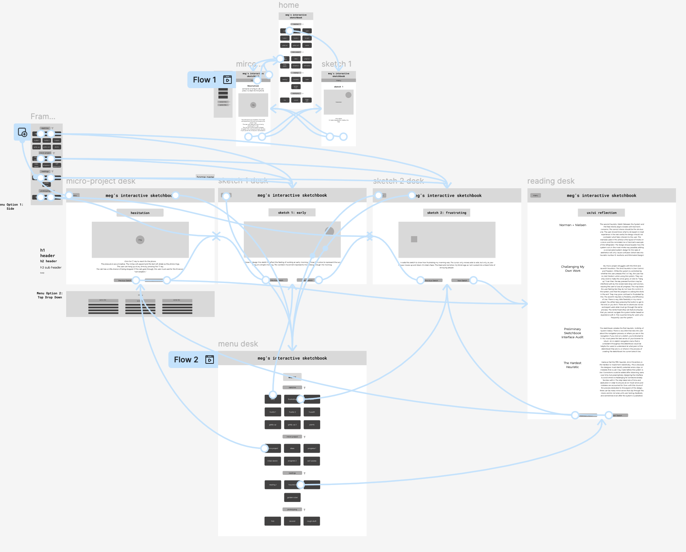
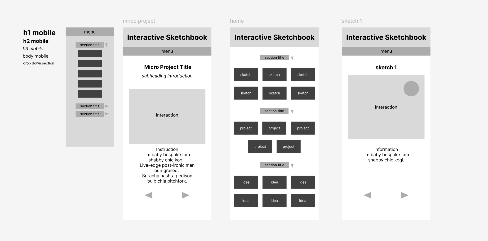

Click Here for Figma Prototype Link

The navigation model of my micro-project is straightforward and in alignment with user intuition. There is a home page that clearly lists and navigates the user to all previous assignments, including sketches, prototypes, micro-project and ideation, and reading reflections that I have completed throughout the course. At the bottom of each page containing a sketch or other assignment, there are navigation arrow keys which the user may use to cycle through assignments quickly. Alternatively, the user may use the drop down menu by hovering over the “menu” button for quick and precise navigation, or by simply clicking the page title (“meg’s interactive sketchbook”) to be brought back to the home page (the full menu.) An initial iteration had a constant menu header, but it took up too much space and so the drop down menu was implemented. These options comply with Shneiderman's rule of permitting easy reversal of actions, and allowing the user to backtrack and navigate seamlessly throughout the system.
The hierarchy of the micro-project is clear and addresses Nielsen’s second heuristic, Match Between the System and the Real World, as well as Norman’s concerns of easy understandability. Everything in the system is as it should be, and where it should be. The title and link to the homepage are at the very top in the largest text and bolded. Each button below it takes the user to the exact place they seek to go immediately without hassle or confusion. Within the menu, the navigation buttons are clearly sorted by category for ease of navigation. Once the user has navigated to the specific page they wish to go to, the title of that assignment will be at the top of the page. This complies with the first heuristic, Visibility of System Status. The signifiers (the buttons which the user will use to navigate the system) will allow the system to afford the user easy navigation, as per Norman’s insights.
The mobile-first set up ensures that a user’s most basic enjoyable experience can fit on the smallest of scales prior to application in a larger format. Navigation must be appropriate, accurate, and easy on this slim scale before being applied to a desktop version. After this scale is created and working correctly and smoothly, the designer can begin to add details and flair, but the integrity and core of the system must stand. The mobile wireframes are easy to navigate and give the user only the most pertinent information. They are translated more or less exactly onto the desktop wireframes, with some added flair, spacing, and scaling to better format the larger screen.
The buttons all lead to the same places and have the same hierarchical layout across platforms (following a h1-3, menu, and body type setting hierarchy), which aids in Shneiderman’s rules of Consistency across the platforms, and his rule of Reducing Short Term Memory Load. The only issue is that the system doesn’t as easily comply with Shneiderman’s rule of Universal Usability, as the navigation system is the same for all who use it, offering no shortcuts or alternate navigation routes for expert users. There is a pop up menu when the user hovers in the top left corner which could act as a shortcut for knowledgeable users, but otherwise the system is entirely consistent across mobile and desktop wireframes, and all users can expect the same navigation experience and outcomes.



My navigation model is consistent throughout desktop and mobile pages, and is straightforward to avoid user confusion. The system is understandable and inherent. Logic is consistent across platforms, and states are clear and visible.
The hierarchy is consistent across platforms, permitting the desktop wireframes additional space and formatting where needed. Both platforms follow a h1-h3, menu, and body text setting hierarchy. The mobile wireframes are basic but complete, and are easy to navigate without omitting important information.
State is consistently visible, with the title at the top and the interaction or assignment immediately following. Interaction cues are clear and predictable, and system status is legible. The menu is small, which may shelter its importance slightly, but it should be easy to navigate back to.
Norman's concerns are addressed by making the entire system easy to understand and inherent to human behavior, with obvious signifiers and affordances. The system follows the first (Visibility of System Status,) second (Match Between System and Real World,) fourth (Consistency,) and sixth (Recognition and Recall) heuristics. The system does exactly what it should (first,) shows the user what page they are on (second,) is consistent across platforms (fourth,) and has buttons that follow basic recognizable functions like ‘menu’ leading to menu (sixth.) The golden rules followed included consistency, prediction of short term memory load, easy reversal of actions, and keeping users in control by having reliable and recognizable actions according to assumed function.
All three page types clearly belong to the same interface system, with structure, navigation, and hierarchy entirely coherent and understandable, and with consistent action and response.
Moderate ambition, mostly safe. The drop down menu took some time, but otherwise the system is fairly straightforward with no outstanding structural risk.
Snapshots show progression but extremely basic wireframing to more complex and appealing system structure.
In small groups, I listened intently and gave well thought feedback to my peers. I showed and asked questions about my own work, striving for insight on anything I was unsure about. I found feedback to give to each person, making sure I carefully considered their respective progress and questions.